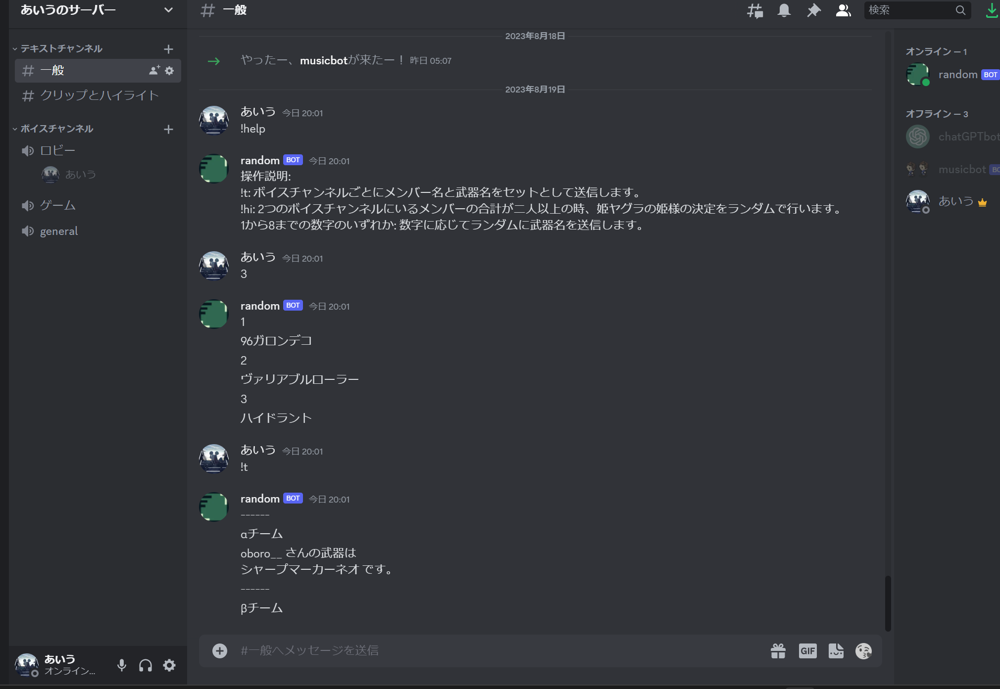

Discordbot

| 使用言語など | Python |
|---|---|
| 作成経緯 |
友人とDiscordアプリで通話をしながらSplatoon3というゲームで遊んでいた。 その中で、ゲーム内の武器をランダムにして遊ぶ会があった。
その際、友人は既に存在していた武器ランダムbotを使用していた。 しかし、既存のbotは試合が終わるたびに人数分繰り返し呼び出す、もしくは先に全員の名前を入力する手間があることに気づいた。
そこで、その2つの手間をどちらも省くことができる新しいbotを作成することを決意した。 また、当時はPythonで制作物を作成したことが無く、Pythonを用いて何かしらの開発を行いたいと思っていたため、Pythonを採用した。 |
| 内容 |
大まかな流れは以下のようになっている。
①ユーザーが武器ランダム処理を行うコマンドを実行する
②botが指定したボイスチャンネルに参加しているメンバー名を取得する
③武器をまとめたリストからランダムで武器を選択する
④取得したメンバー名と選択された武器名を、各ボイスチャンネルのごとに分割してテキストチャンネルに出力する また、当初は友人のDiscordサーバーのみで用いる予定であったので、ボイスチャンネルidなどは友人のサーバーidをそのまま記述していたが、他の方からも使いたいという要望をいくつかいただいた。 そこで、私は他のサーバーにも対応させるために新たにスラッシュコマンドを追加し、ユーザーからボイスチャンネルidを受け取り、その後上記の操作を行うように変更した。 |
| プログラムファイル | Driveリンク |
| 実行結果 | 実行結果リンク |